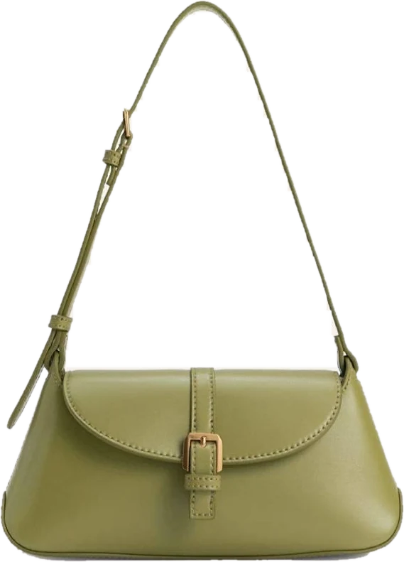
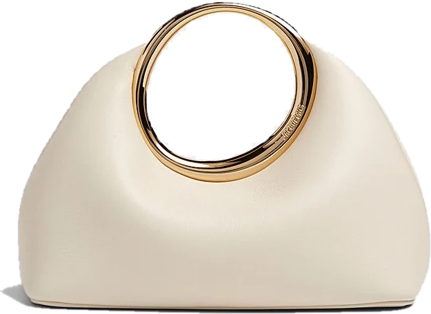
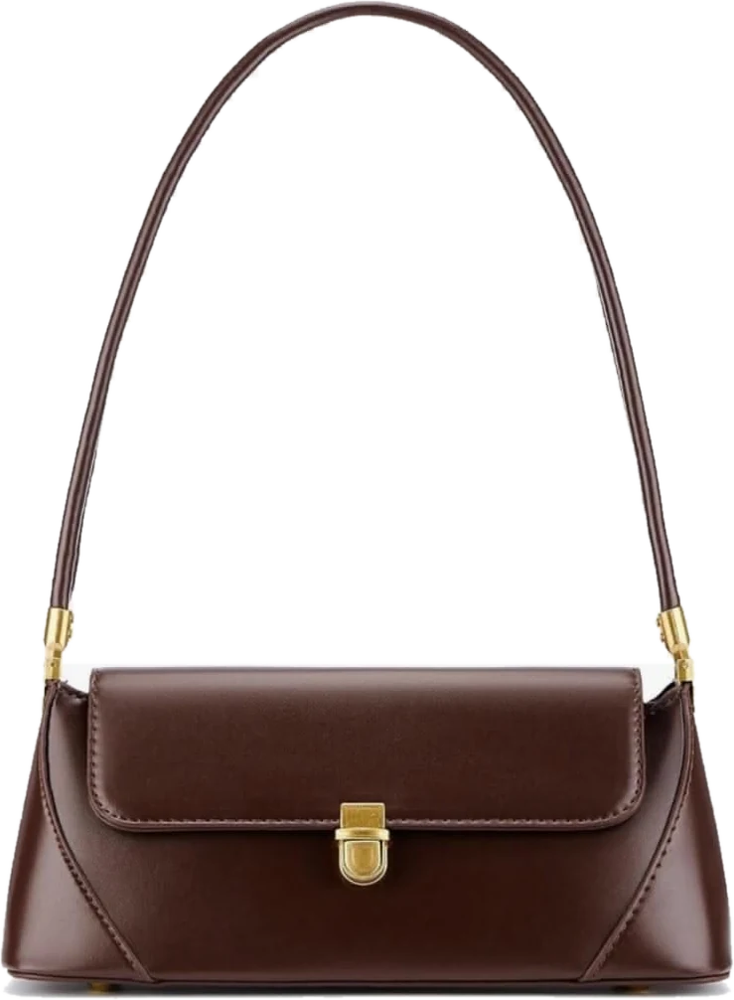
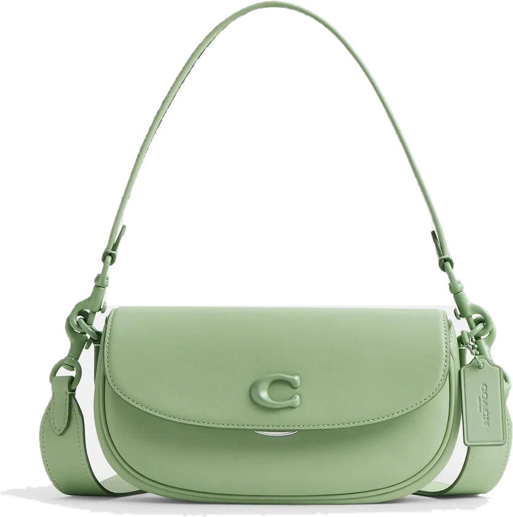

Collection Printemps — maquette
Porter
la lumière.
Des formes simples, des couleurs douces. Chaque sac est photographié de face, sur fond uni, pour laisser parler le dessin.
Découvrir la collection
01 — Collection
Huit silhouettes, un seul cadre.






02 — Atelier
Le cadre retient le sac.
Les anses s'en échappent.
Le corps du sac reste posé dans un aplat de couleur assorti ; les anses débordent sur la page blanche. Un geste graphique simple qui donne du relief sans ajouter de décor.
03 — Le principe photo
Pour obtenir cet effet, chaque photo suit la même règle.
- 01
Fond uni clair
Blanc ou gris très pâle, sans texture ni décor, pour un détourage net.
- 02
Vue de face
Appareil à hauteur du sac, bien centré, sans angle ni perspective.
- 03
Anses dressées
Anses levées et visibles en entier — c'est elles qui sortent du cadre.
- 04
Lumière douce
Éclairage diffus, ombre au sol légère ou absente, couleurs fidèles.